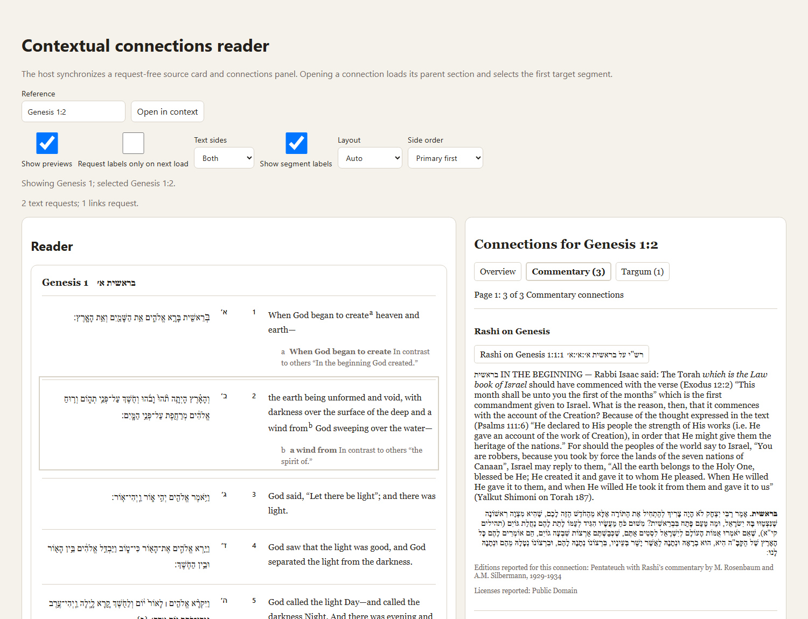
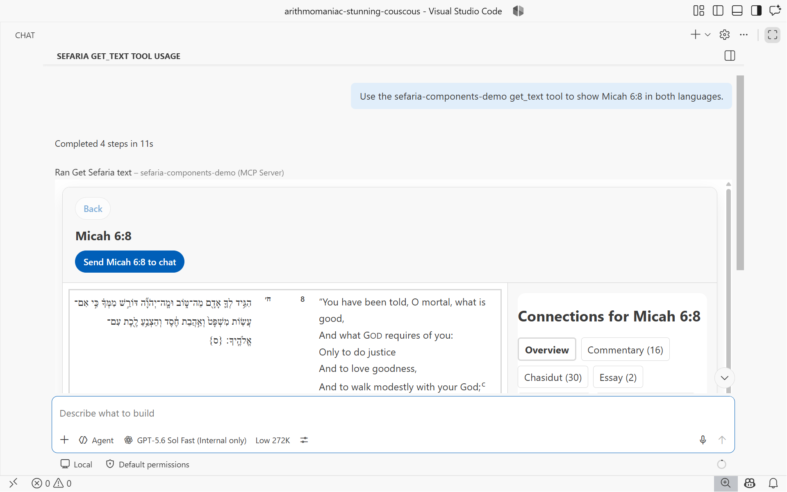

Created/edited by GitHub Copilot; pending human review.
A reader with history: what to share, what to keep in the host
Created/edited by GitHub Copilot with human review/feedback by avilevin.
Accepted direction: reuse the source card and connections panel, add a headless reader session, and compose them in a controlled reader surface with Back and breadcrumbs. Share the interaction semantics and visual surface between the browser and MCP App. Keep their request execution separate.
This is an illustrated explanation, not the normative API reference.
Current baseline refers to repository commit
5dedf0a89f9b8486143cc071e01b620cc53247cd, inspected on
September 6, 2026, after the connections panel, bounded client cache,
and adaptive MCP connections flow merged.
Observed describes pinned upstream source.
Planned identifies accepted work that has not landed on
the baseline. The component and
integration specifications remain
authoritative.
Unified presentation of the Markdown walkthrough, with its screenshots and editable inline SVG diagrams interleaved. The Markdown file is the prose source; this page contains the diagram source. Keep the prose in both versions aligned when revising the explanation.
The questions this answers
- Does the current demo already have a reader, or do we need another component?
- Who owns breadcrumbs, and how does that compare with Sefaria?
- What can the browser and MCP App share when requests happen differently?
- What must Back restore, including on a narrow screen?
1. What we have now
The browser demo is already a small reader application. Its host coordinates two reusable elements; neither element requests data. Calling it "non-stateful" was misleading: it has current state, but does not retain a navigable history.

| Current piece | What it already owns | What it does not own |
|---|---|---|
| Source card | Bounded text rendering, metadata-backed segment targets, controlled selection, focus/reveal behavior | Connections loading or reader history |
| Connections panel | Category summaries, 20-entry pages, bounded previews, action events | Target navigation, requests, or history |
| Browser demo host | Displayed section, active segment, captures, projection settings, cancellation, stale-result suppression | Back stack or breadcrumbs |
| Adaptive MCP App | Host-delivered source or links result validation, pure component projection, local connections category/page controls, explicit chat follow-up | Same-App connected-source navigation or reader history |
The browser host opens a target, obtains its server-provided context when needed, selects the first qualified segment, and loads that segment's connections. It makes at most two text operations and one links operation for that flow. Selecting another displayed segment needs only a links operation. Category/page changes project the current capture with zero requests; preview acquisition is a separate explicit action. See the current interaction contract.
The current MCP experience is still narrower than the planned integrated reader:

The missing feature is therefore history across coordinated reader workspaces, not another text renderer.
2. What Sefaria owns, and what we are not copying
On Sefaria Web, ReaderApp owns a collection of panels and
browser-history updates. Selecting text can open a connections panel
adjacent to it; citation navigation can insert a text panel and replace
a following connections panel. This preserves context spatially, rather
than necessarily replacing one whole reader with another.
ReaderPanel can delegate state changes to that parent.
On Sefaria Mobile, ReaderApp uses TabHistory,
built from PageHistory, and gives Back actions to reader
controls. Current state per tab is distinct from the back stack.
The inspected Web BreadcrumbPath is a presentation
component used for search-result hierarchy: callers supply crumb data
and navigation behavior.
It is not evidence of a source-to-commentary reader-history
trail.
Connections category/mode navigation is another concern again.
For our bounded product, the accepted supported surface has one active
text-and-connections workspace and a retained trail of earlier
workspaces. A trail such as
Micah 6:8 > Rashi on Micah 6:8 > another source is
our navigation-history feature, not a claim that we
copied Sefaria's breadcrumb semantics. A separate website demo owns an
ordered spatial pane collection so it can show multiple source and
connections panes at once without turning arbitrary panel management
into the public package contract.
3. The same component can work in both hosts
The shared surface would be a controlled renderer: it receives a reader-specific view model plus presentation/interaction properties and emits actions. It would not receive raw API payloads, request objects, a client, or the session's complete capture store.
| Owner | Responsibility | Explicit exclusion |
|---|---|---|
| Headless session | Current entry, immutable history transitions, stable entry IDs, breadcrumb data, which completed result belongs to which navigation | DOM, MCP SDK, HTTP, hidden retries |
| Host coordinator | Executes the session's requested work, manages cancellation and operation identity, validates external results, calls factories, reports completion | A second independent history stack |
| Controlled reader surface | Navigation bar, pane layout, accessible controls, presentation state supplied by the host, composed action events | Fetching or interpreting API payloads |
| Existing child elements | Render their existing component view models and emit their existing events | Knowledge of the reader session |
"Headless" means usable without a DOM element. The accepted session
lives at @sefaria/components/reader-session, not in another
npm package. Likewise, the planned reader surface is a visual
composition, not a new client facade or a composite async factory that
secretly calls child async factories.
Browser execution
A segment event goes to the browser coordinator. It calls the typed client or existing async factory, or projects an explicitly held capture when that capture covers the action. Results update session-owned state, which supplies rendering data to the surface. A host can keep its own markup instead of using the shared surface.
The standalone page can eventually integrate reader navigation with its URL and browser Back, but that should be an explicit host feature. The session should not write global browser history itself.
MCP execution
The initial render remains unchanged: the server's tool result supplies corrected API JSON; the App validates it and calls the pure factory. There is no duplicate first-render text request.
For a later interaction needing data, the planned integrated App
coordinator must call a server tool through the MCP host. The exact
installed SDK capability and named-host permission path remain a
qualification gate rather than an assumed
callServerTool API. The server requests Sefaria, and the
App validates the returned operation/status/request metadata and payload
before pure projection. It does not call the browser
async factory against Sefaria as a fallback.
The MCP Apps architecture describes host-proxied tool calls; the overview distinguishes those calls from sending messages or updating model context. Clicking a connection need not ask the language model to invent the next step. Host tool availability and permissions still apply.
The current get_links_between_texts tool preserves the
corrected array payload inside the specified MCP object envelope.
Request identity and documented status remain available for the existing
validation-and-projection boundary. The current selected-connection
action deliberately sends a chat follow-up; integrated same-App
navigation is separate planned work and must not claim success from that
composer path.
Back, breadcrumbs, and category/page changes covered by retained captures stay local to the App. A host that denies a needed tool call gets an integration-owned unavailable/error presentation, not a hidden direct request. Browser Back must not be used to navigate the surrounding chat.
The host mediates data access, not every local interaction. A conversation's tool-call sequence is also not the reader's breadcrumb stack. A new unsolicited tool result needs a declared reset/replace policy; it must not automatically become a child navigation merely because it arrived later.
4. Breadcrumbs need one semantic owner and one visual owner
The session owns the ordered entries and the meaning of returning to one. The reader surface owns their accessible display. Selecting a crumb emits an entry ID, not a reference to parse and reload.
Example: start at a Micah 6:8 workspace, open a connected Rashi source, then open another source from there. Each entry preserves both the text pane and its related connections state. Two visits to the same reference can be different entries, so reference strings are not history IDs.
| Action | Proposed history effect |
|---|---|
| Select a different segment in the current section | Update current entry and replace its connections state |
| Change category, page, preview visibility, or display settings | Update current entry; do not add a crumb |
| Open a connected source | Establish a new entry when its contextual reader can be committed |
| Back | Return to the previous retained entry |
| Select an earlier crumb | Return to it and discard later entries; Forward is not part of this contract |
| Switch Text/Connections pane or resize | Change presentation, not the source-history path |
During navigation, pending execution remains separate from the last committed workspace. If contextual text fails, no successful destination entry is created. If text commits but connections fail, retain the destination text and its explicit connections failure. These rules extend the current demo's independent pane behavior rather than forcing both requests into a single all-or-nothing result.
Restore usable state, not just the visible page
Consider
Micah 6:8 connections page 2 -> Rashi -> Back -> page
3. Restoring the page-2 ConnectionsViewModel can redraw
page 2, but it cannot project page 3: the current view model contains
only one page.
The accepted session retains the validated links capture with its request/status/coverage alongside each retained entry. Captures, requests, projections, and view models remain distinguishable. The surface receives only rendering data. This is explicit session retention, not a default client cache.
An entry also needs the selected segment/position, actual edition choices and request inputs, content-language and display settings, category/page, pane failures, and any stable focus/scroll target needed for restoration. Prefer supplied labels and stable targets to reference parsing or saved DOM nodes.
Back must invalidate pending work. For example: open Rashi, return to Micah 6:8 while Rashi's links are pending, then receive that late result. It must not replace the restored Micah connections.
There is no public snapshot format in this delivery. Retention defaults to 20 entries including current and 20 MiB of aggregate unique corrected payload JSON measured as UTF-8 bytes. The session visibly marks an evicted history boundary, never silently removes current or pinned data, and rejects an admission transactionally when permitted eviction cannot make it fit. In-memory history and durable cross-reload persistence remain separate promises.
5. Wide and narrow layouts share the same reading state
On a wide surface, show the trail above text and connections side by side. On a narrow surface, show one pane with an explicit Text/Connections switch and a compact Back/current-location control. An accessible trail menu can expose earlier entries without requiring hover.
Switching panes does not pop source history. Expanding the host does not fetch data or reset the selected segment. The source card's bilingual layout remains a separate setting from the reader's two-pane layout.
Use the actual embedding width, not an assumption that desktop means wide. MCP display modes are negotiated with the host, so fullscreen should improve presentation rather than be required for navigation. Focus, scroll placement, and container measurements remain UI concerns; the session retains stable restoration targets.
Native mobile could reuse DOM-free navigation semantics, but the current Lit elements and HTML-bearing view models do not become native widgets automatically. This design promises neither a native renderer nor exact Sefaria-Mobile parity.
6. Which abstraction is worth building?
| Option | Cost and benefit | Fit |
|---|---|---|
| Duplicate the demo coordinator in each host | Fast initially; selection, errors, and Back can drift | Useful only while learning the MCP interaction boundary |
| Shared session, host-specific UI | Reuses history without imposing visual structure; duplicates navigation presentation | A valid escape hatch |
| Shared session plus controlled reader surface | Reuses history and breadcrumb/pane UX; adapters remain host-specific | Recommended target |
| Autonomous reader element with its own transport | Easy-looking embed API; mixes data access, application policy, and rendering | Conflicts with current ownership rules |
The shared reader surface earns its place by owning navigation presentation and responsive composition, not by being a convenient place to put requests. The existing demo was a useful first host, not a failed component design.
7. Accepted boundaries and remaining qualification
The component specification now settles push/update rules, stable identities, retained-history limits, pending connections, capture accounting, pinning, and explicit rejection. Durable persistence, Forward, browser URL integration, native mobile rendering, and a public arbitrary-panel manager are deferred.
For the MCP connections work, preserve these seams: explicit component
actions; host-mediated data access; corrected payloads with
request/status identity; shared pure projection; and operation-scoped
completion that cannot overwrite a newer navigation. Do not make the
server own visual history or return a reader view model as
structuredContent.
The session foundation proves page-2/Back/page-3 reprojection, late completion rejection, bounded admission, shared capture accounting, interrupted pending connections, and pinned-entry behavior without I/O. The controlled surface, website workspace, and integrated MCP reader remain later slices. Their acceptance still includes a denied MCP tool call, target-text success with links failure, and wide-to-narrow resizing without requests through the actual browser and named-host paths.